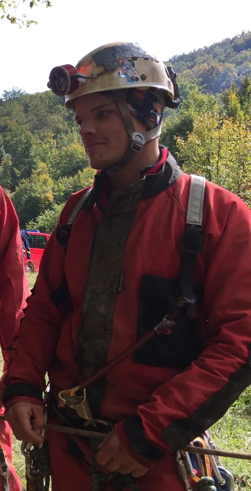

46. zagrebačka speleoškola
Upisavši speleološku školu, nisam ni sanjala kako će nekoliko vikenda promijeniti moj pogled na svijet, kako će srušiti predrasude o drugima i istinski me promijeniti. Sve je započelo prvim sastankom, mnoštvom…

Voditelj škole: Andrija Perušić
Osvrt na školu iz pera jedne školarke:
OTKRIĆE
(piše Marija Petrović)
Upisavši speleološku školu, nisam ni sanjala kako će nekoliko vikenda promijeniti moj pogled na svijet, kako će srušiti predrasude o drugima i istinski me promijeniti.
Sve je započelo prvim sastankom, mnoštvom nepoznatih ljudi u istoj prostoriji, svi toliko različiti, a opet privučeni istom željom – mračnim podzemljem. Vođa je nabrajao pravila izleta, među kojima je spomenuo zabranu nošenja sendviča.
Na prvu to me pravilo zbunilo, nije mi bilo jasno zašto ne možemo nositi hranu samo za sebe, zašto jednostavno ne mogu uzeti onoliko hrane koliko ću ja pojesti. Ali onda je došao prvi izlet, prvo smo morali izvaditi svu hranu na jedno mjesto kako bismo svi skupa krenuli jesti. Odmah sam shvatila svoju pogrešku u razmišljanju, tada sam shvatila bit. “Hoćeš mi dodati šnitu kruha?” jedna je vrlo jednostavna rečenica koju ne možeš izgovoriti ako si doneseš sendvič. Toliko jednostavna rečenica, a opet toliko značajna da te automatski poveže s osobom pored tebe i već sljedećeg trenutka razgovarate o ostaloj ponuđenoj hrani, o receptu i onda razgovor samo teče.
Tako su tekli i ostali izleti, tako su tekle moje misli koje su u svakom trenutku spoznavale nešto novo. Na izletu na kojem smo se penjali na Gorsko zrcalo otkrila sam čudesan svijet ljudske dobrote. Ispenjati dvadeset metara i nije bilo toliko strašno, ali kada se trebalo spustiti dolje, sve me kočilo. Mozak mi je uporno govorio kako visim na užetu privezanom za drvo, uporno mi je govorio da pogledam dolje, noge se, kao prikovane, nisu htjele pomaknuti. Tada mi je ljudski dodir značio više no ikada. Ruka instruktorice na mojemu ramenu dala mi je svu moguću sigurnost, kao da je govorila “Ja te čuvam!”. Znala sam da me njezina ruka ne bi zaustavila u padu, ali toplina koju sam tada osjetila otjerala je sav moj strah. Spustila sam se puna hrabrosti i sreće jer sam bila dirnuta ljudskom dobrotom.
Na svim izletima razmišljala sam o ljudima koje sam upoznala. Bilo je toliko različitih ljudi na jednom mjestu, svi smo bili različitih godina, različite struke, različitih vizija, a opet svi smo bili tu s istim ciljom. Ta me činjenica toliko fascinirala, vjerojatno zato što sam naviknula biti u društvu svojih vršnjaka i zato što nisam imala često priliku popričati sa starijima i mlađima, ali sada su riječi samo tekle.
Kao da su sve granice i sve razlike između nas obrisane, kao da smo svi jedno, kao da smo svi - čovjek. Pogotovo kada smo sjedili oko logorske vatre - tada nema veze tko smo ni što smo, tada je jedino bitno da smo svi tu, okupljeni oko jedinog izvora topline dijeleći pozitivnu energiju jedan drugome. Shvatila sam nekoliko stvari.
Shvatila sam da sam se zaljubila u svakog čovjeka, u sve ljude koji su bili oko mene. Zaljubila sam se u njihovu nesebičnost, u njihovu volju, u njihovu hrabrost i u njihovo strpljenje. Imala sam osjećaj kao da sam otkrila novi spektar ljudske duše. Svi su bili puni ljubavi i prema speleologiji i međusobno. Bila sam toliko zbunjena i razdragana činjenicom što jedna ogromna količina ljubavi kruži okolo i što svatko dobiva dio nje. To me dovelo do nove spoznaje, shvatila sam koliko sam sretna i koliko volim život. Bilo mi je nevjerojatno što me samo nekoliko vikenda toliko dirnulo, što mi ništa više od cerade nije potrebno kako bih spavala mirnim snom. Ići s nepoznatim ljudima u šumu možda bi na prvi pogled nekome zvučalo zastrašujuće. Biti daleko od svega poznatog, uključujući udobnost svojega kreveta, jedno je posebno iskustvo koje bi svatko trebao iskusiti.
Upis u speleološku školu jedna je od mojih boljih odluka u životu. Uz otkrivanje čudesnog svijeta podzemlja, što je svima nama bio cilj, speleologija mi je donjela puno više od toga – otkrivanje čudesnog svijeta ljudi.
Nezaboravno iskustvo dobiveno u samo nekoliko vikenda još će mi dugo biti izvor unutarnje snage i dobrote koje ću radosno dijeliti s drugima. Trag koji su prekrasni ljudi ostavili na meni, bit će mi vječna motivacija za prihvaćanje nepoznatog širom otvorenih ruku.
Veselim se budućnosti i širenju vidika s drugačijim i posebnim ljudima, dok nam je svima na pameti ista misao – idemo špiljarit'!
46. zagrebačku speleološku školu, u organizaciji speleolološkog odsjeka PDS Velebit, upisalo je dvadeset i četiri (24) polaznika. Jednak broj je uspješno pristupio ispitu i stekao naziv speleološki pripravnik. Škola se odvijala prema programu školovanja Komisije za speleologiju Hrvatskog planinarskog saveza, u razdoblju od 30. ožujka 2016. do 4. svibnja 2016. Održano je devetnaest predavanja, u prostorijama PDS Velebita (Radićeva 23), raspoređenih u šest srijeda te tri jednodnevna i tri dvodnevna izleta. 14., 21. i 28. travnja 2016. održane su dodatne praktične vježbe za polaznike škole na sljemenskom tunelu.
46. zagrebačku speleološku školu, u organizaciji speleolološkog odsjeka PDS Velebit, upisalo je dvadeset i četiri (24) polaznika. Jednak broj je uspješno pristupio ispitu i stekao naziv speleološki pripravnik. Škola se odvijala prema programu školovanja Komisije za speleologiju Hrvatskog planinarskog saveza, u razdoblju od 30. ožujka 2016. do 4. svibnja 2016. Održano je devetnaest predavanja, u prostorijama PDS Velebita (Radićeva 23), raspoređenih u šest srijeda te tri jednodnevna i tri dvodnevna izleta. 14., 21. i 28. travnja 2016. održane su dodatne praktične vježbe za polaznike škole na sljemenskom tunelu.